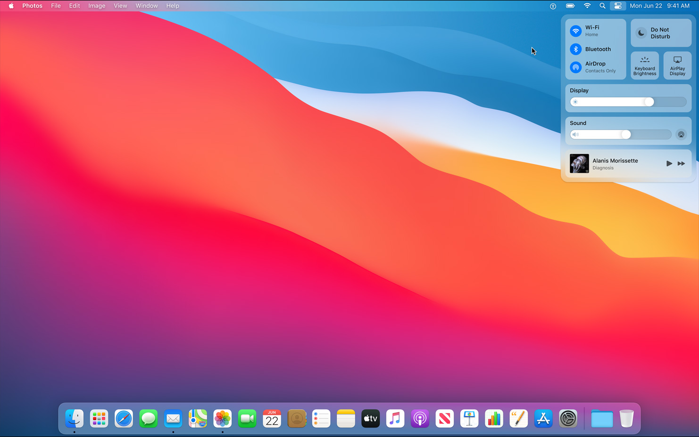

Alan Abramowski
Klasa 1 TIF
macOS – rodzina uniksowych systemów operacyjnych produkowanych i rozprowadzanych przez Apple Inc. Dostępny oficjalnie jedynie dla komputerów Macintosh, instalowany fabrycznie na nich od 2002 roku. 13 czerwca 2016 roku na WWDC została ogłoszona zmiana nazwy na macOS w związku z potrzebą unifikacji nazw używanych przez Apple dla swoich systemów operacyjnych (iOS, watchOS, tvOS)[3].
macOS jest zbudowany na podstawie dawnego systemu NeXTStep z drugiej połowy lat 80., wykupionym przez Apple wraz z producentem tegoż systemu NeXT w 1996 r. Jest on następcą systemu Mac OS 9, wydanego w 1999 r. i ostatniej wersji „klasycznego” Mac OS, który był głównym systemem komputerów Macintosh od 1984 roku.
macOS oryginalnie działał jedynie na Macach o architekturze PowerPC. W 2006 wydano pierwszą wersję dla nowych Maców o architekturze x86 – Mac OS X 10.4. W 2005 roku wydano pierwszą wersję w pełni zgodną z Single UNIX Specification w wersji trzeciej – Mac OS X 10.5, działający zarówno na Macach PowerPC i x86 z pomocą technologii zwanej Universal binary, czyli formatu plików wykonywalnych działających na obu architekturach. 10.6 Snow Leopard to ostatnia wersja, która obsługuje programy dla procesorów PowerPC przy użyciu narzędzia Rosetta. Mac OS X 10.7 przestaje również obsługiwać komputery o architekturze 32-bitowej, ograniczając się do procesorów 64-bitowych.
Pierwszą opublikowaną wersją systemu był Mac OS X Server 1.0 z 1999 roku i Cheetah (wersja desktopowa) wydany 24 marca 2001 roku. Poszczególne wydania, do wydania 10.8 były nazywane nazwami pochodzącymi od wielkich kotów, np. OS X 10.8 nosi nazwę handlową Mountain Lion, czyli puma płowa. Obecnie nazwy systemów macOS pochodzą od parków krajobrazowych w Kalifornii, np macOS Sierra. Wersja serwerowa, OS X Server technicznie nie różniła się wiele od OS X – posiadała jedynie wiele wbudowanych aplikacji serwerowych. Obecnie, czyli od wersji Lion nie ma już możliwości zakupu OS X Server osobno – jest on dostępny jako pakiet aplikacji do macOS, a także ładowany do wersji serwerowych Maców Mini oraz Pro.
